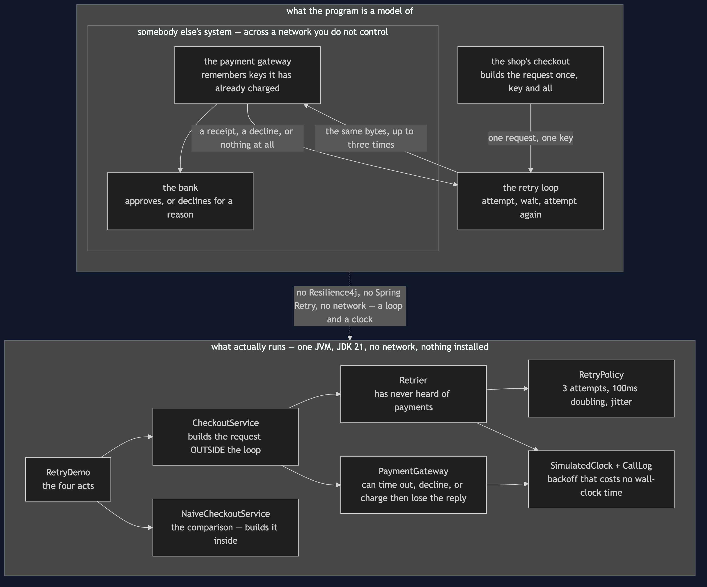

Retry with Backoff — Architecture Diagram
Where each piece of this project sits, and — because this project starts nothing — what each piece stands for. The class diagram shows the types and the sequence diagrams show the order of attempts; this one answers the question those two cannot, which is who is responsible for what, and which side of the network each responsibility lives on.
Read the picture as two halves stacked. The upper half is what the program is a model of: a checkout in the shop, a payment gateway somewhere else run by somebody else, and a bank behind it. The lower half is the literal truth — one Java program, a retry loop, a fake gateway that can be told to misbehave, and a clock that only moves when the retrier moves it.
There are two things to look for, and they are both about boundaries.
The first is that the retrier does not know what it is retrying. It takes something that might work, a policy about waiting, and a rule for telling a temporary failure from a permanent one. It has never heard of payments. That is why it is a separate box and not a method on the checkout.
The second is the key, drawn crossing the boundary with the request. It is made once, on the shop's side, before any attempt. Everything that keeps a shopper from paying twice depends on that key being the same on the second attempt as on the first — and no amount of cleverness inside the retrier can supply it, because by the time the retrier is involved the request already exists.

What the diagram is telling you to count
The key is created in the top box and nowhere else. CheckoutService builds the PaymentRequest before entering the retry; NaiveCheckoutService builds it inside the loop, so every attempt carries a new one. That is a one-line difference between the two boxes in the lower half, and it is the entire difference between charging a card once and charging it twice.
The memory that saves you is on the far side. The gateway is the thing that recognises a key it has seen before and replays the original receipt. The shop cannot do that for itself — it cannot even tell whether its lost request arrived. Retry is only safe when the receiver is prepared for it, which is why "is this operation idempotent" is a question about somebody else's system.
Retrier has no arrow to PaymentGateway. It calls something that might work and consults a rule about which failures are worth repeating. Payments happen to be what it is pointed at in this project, and nothing about the class says so.
RetryPolicy is a box of its own because the waiting is a policy, not a detail. Three attempts, 100ms doubling to 200 and 400, plus jitter. Those numbers are configuration in one place rather than sprinkled through the code, which is what lets a test assert the sequence exactly.
What it deliberately leaves out
There is no circuit breaker here, and a retry loop without one has a failure mode of its own: when a service is properly down, every caller politely retrying turns a slow system into a dead one. That is the next pattern along, Circuit Breaker, and it exists largely because of this one.
There is no budget or deadline either. Three attempts with backoff is up to 700 milliseconds of shopper patience, and a real checkout usually has an overall time limit that can cut the loop short. Adding it would not change the shape of this picture, only the numbers in the policy box.
And there is no second instance. The most natural retry in a real system is a retry against a different machine — which is why this pattern sits directly after Load Balancing. Here the gateway is a single box, so the retry goes back to the same place, which keeps the diagram about waiting and idempotency rather than about choosing.